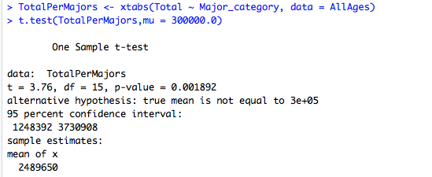
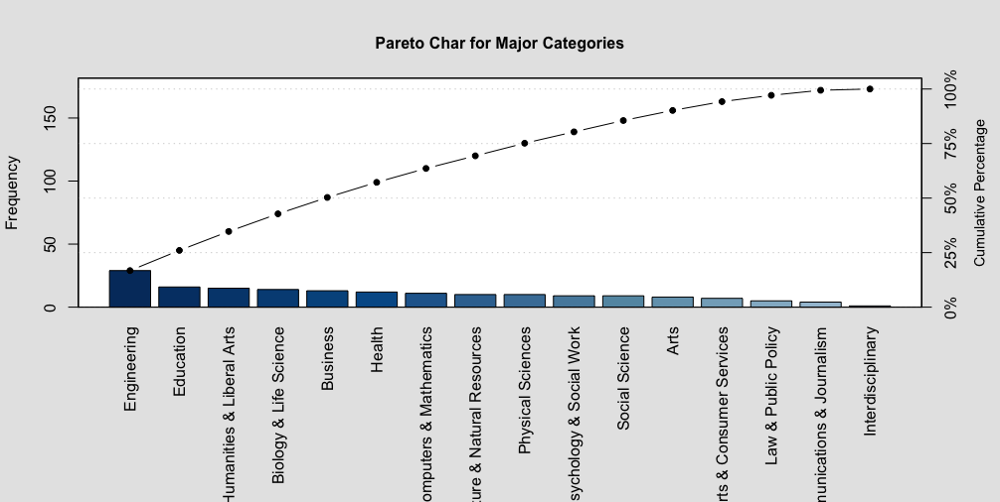

Hypothesis
A statistical hypothesis is an assumption about a data's population mean or a standard deviation. In order for one to calculate and predict or assume such hypothesis, they must know the mean, standard deviation and the type of confidence interval one wants to conduct a statistical experiment. In my data, AllAges.csv, I will conduct 3 hypotheses about said data.
First Hypothesis:
The data's column "total" is an "Integer" type of class that states the amount of Students enrolled in a specific type of field/major. In this hypothesis, i am assuming that the true population average is different from 300,000.0 meaning that the average of students in each major is 300,000.0. My question now is, is there any evidence that the average total of students is 300,000.0 and if so, has it changed? In this hypothesis, i will use a 95% confidence interval.
H0: No change. 300,000.0 is true population mean
H1: Changes has been made.

The P-value in above's figure states that it is in between 5-0 and thus we reject the null hypothesis. In conclusion, we can predict that the average is different from 300,000.0 students per major and that because the mean (230256.6) is less than 300,000, not only is the true mean different, but it has decreased overtime.
Second Hypothesis:
The data's column "Unemployment_rate" is a "numberic" type of class that states the amount of unemployment rate of each individual field/major. In this hypothesis, i am assuming that the true population average is different from 0.55 meaning that the average unemployment rate in each major is 0.55. My question now is, is there any evidence that suggest that the average unemployment rate of each major is 0.55 and if so, has it changed? In this hypothesis, i will use a 95% confidence interval.
H0: No change. 0.55 is true population mean
H1: Changes has been made.
The P-value in above's figure states that it is in between 5-0 and thus we reject the null hypothesis. In conclusion, we can predict that the average is different from 0.55 unemployment rate of each major and that because the mean (0.05735545) is greater than 0.55 (our assumption), not only is the true mean different, but it has increased overtime.
Third Hypothesis:
The data's columns "Employed" and "Unemployed" are both classed as "integer". The employed columns states the number of employed students who received a job after finishing school whilst the unemployed column states the amount of unemployment students on each individual field/major. In this hypothesis, i am assuming that the mean of both columns "Employed" and "Unemployed" are both equal. In other words, both employed and unemployment in each individual major/field are the same. My question now is, is there any evidence that suggest that the average are the same? In this hypothesis, i will use a 95% confidence interval, assume non-equal variances and using a Two-sided test.
H0: mean of employed students = mean of unemployed students of each majors
H1: Employed's mean does not equal to the mean of unemployed students.
The P-value in above's figure states that it is in between 5-0 and thus we reject the null hypothesis meaning that the alternative hypothesis is instead accepted. This means that the mean of both Employed and unemployed are both different than each other. This is pretty obvious because the values of Employed are 100x bigger than the values in unemployed.
Analysis
What's the idea behind a pareto graph?
The Pareto principle which is commonly reffered to as the 80/20 rule or The Law of The Vital Few was first noted by an Italian Economist Vilfredo Pareto who showed that approximately 80% of the land in Italy was owned by 20% of the population and to his surprise, when surveying other countries, had a similar distribution applied. Thus, the Pareto Principle has been applied to many problems. I will apply the Pareto chart in order to grasp an understanding of what the categorical variable in my AllAges dataset consist of.
The Pareto chart for my Quantative data: Major
The pareto chat is quite different than other graphs. The differences can be spot on if one where to look at the two contrasting y-variables, the frequency on the left-side of the graph and the commulative percentage on the right-side of the graph. The commulative percentage expresses the frequency distribution within each interval. The frequency on the left side of the graph summarizes the highest amount of majors in that particularly major category. My pareto chart shows 14 different kind of major categories. In each major categories, there are different kind of studies that particularly major offers. For example, a Computer And Mathematics major has 11 different kind of studies one might be able to major such as Computer Science, Applied Mathematics, Mathematics, etc...
RegressionLine
A solid line, the regression line µ, is a given by µ(x) = y-intercept + slope and is used to predict the value of y for a given value of x. In this kind of analysis, i will use the regression line to further understand my data's "Total" and "Employed" and see what the changes are as more people enrolled and whether or not they become employed to a good extend.
As the number of students enrolled to college, a great amount of students, after graduating may be able to have a decent amount of good luck to properly be able to be employed. The Employment rate seems to be amazing.